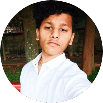
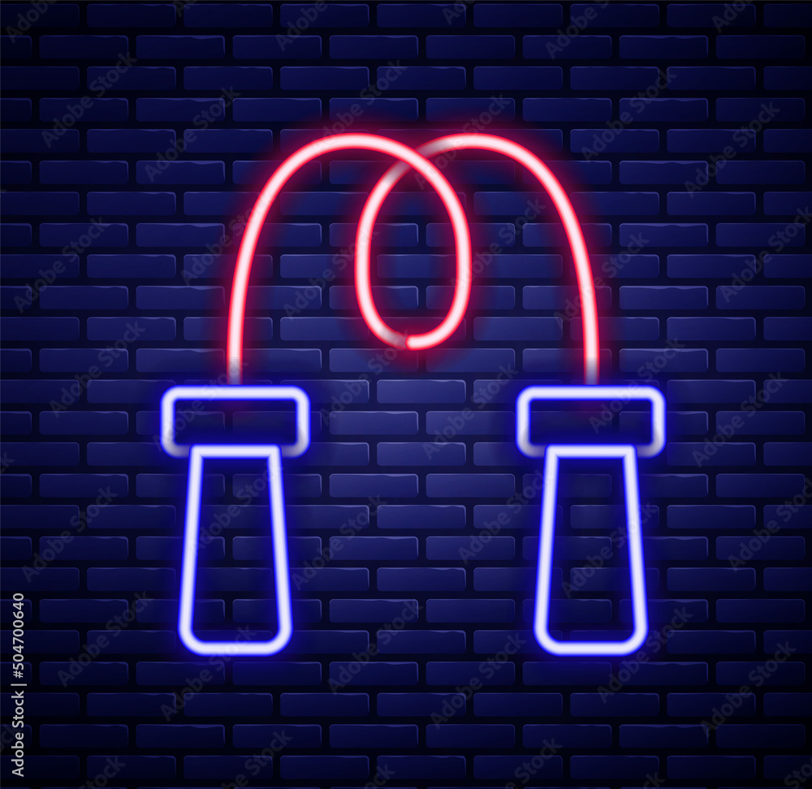

I'm surya
Wanna be Web developer


Hello.
My dream job is to work at Microsoft and travel the whole world and also make my way into the Guinness book of world records❤️💙.
My Skills.

Anime Edits
My first anime was Naruto, TBH it was amazing, but the god of anime was, is and will be Jojo 'no cap'. I gained interest in anime and started binge watching it , I watch a lot of animes and I make edits too.

Fitness
I love to stay fit and I'm pretty good at skipping with a record of 1754 skips in 18min. My current goal is to look like cbum but I like Noel Deyzel.
Origami
It is the art of paper folding, which is associated with Japanese culture. I consider this as one of the most beautiful arts. I'm very skilled at 3d origami and made many origami which are eye pleasing 😙😙.